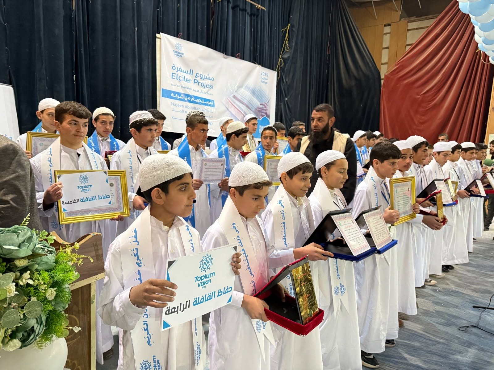

الإنسانية تجمعنا
من أجل مجتمعات أكثر عدلًا ورحمة وكرامة.
نعمل ببرامج إنسانية وتعليمية تصل إلى من يحتاجها بأمانة وشفافية.
دفع آمن ومحمي
برامجنا
لبناء حياة أفضل
نعمل في مجالات متعددة لتلبية الاحتياجات الإنسانية الأساسية.
استكشف جميع البرامج ←بناء دار أيتام في سوريا
دار رعاية متكاملة تجمع السكن والتعليم والرعاية الصحية والدعم النفسي في خان العسل بحلب.
تسديد ديون الغارمين في أفريقيا
وصل المشروع لعدد الحالات المستهدفة لهذه المرحلة. التبرعات متوقفة مؤقتًا لحين إعلان مرحلة جديدة.
ترميم وتأهيل المدارس والمساجد
إعادة تأهيل مرافق تعليمية ودينية متضررة لتعود قادرة على استقبال المجتمع.
أثرنا حول العالم
من إسطنبول إلى العالم — تمتد برامجنا عبر أربع مناطق جغرافية في أكثر من عشرين دولة ومجتمعًا.
20 دولة خريطة تفاعلية لانتشار أعمالنا حول العالم
تبرع شهري منتظم
خطة شهرية ثابتة تمنح المشاريع استمرارية حقيقية، ويمكنك إيقافها في أي وقت.
دعم برامج التحفيظ والقيم
أهدِ تبرعًا باسم من تحب
تبرع نيابة عن والديك أو صديق، وسنصدر الشهادة باسمه ونرسلها إلى بريده.
من الميدان مباشرة
قصة واحدة من مشاريع الإغاثة والتعليم، كما وثّقها فريقنا في موقع التنفيذ.
شاهد المزيد من القصص ←انضم إلينا في الميدان
صور من مواقع التنفيذ



كيف نتعامل مع تبرعك
كل تبرع يمر بمسار موثّق: تسجيل، تنفيذ ميداني، ثم تقرير أثر.
احسب زكاتك
تجب الزكاة عند بلوغ النصاب (ما يعادل 85 غرامًا من الذهب أو 595 غرامًا من الفضة) ومرور عام هجري. النتيجة تقديرية ولا تُعد فتوى شرعية.
الأسئلة الشائعة
هل التبرع الإلكتروني آمن؟
نعم، تمر المعاملة عبر بوابة دفع مشفّرة، ولا نطلب بياناتك إلا في خطوة الدفع.
هل يمكنني توجيه تبرعي لمشروع محدد؟
نعم، اختر المشروع من شريط التبرع أو من صفحة المشروع مباشرة، ويُوجّه المبلغ له تحديدًا.
ما أوجه الدفع المتاحة؟
الدفع بالبطاقة، أو التحويل البنكي مع رفع إيصال التحويل لمراجعته.
هل أستلم إيصالًا بتبرعي؟
نعم، يُرسل إيصال برقم العملية بعد اكتمال التبرع، ويمكنك تحميله من ملفك الشخصي.